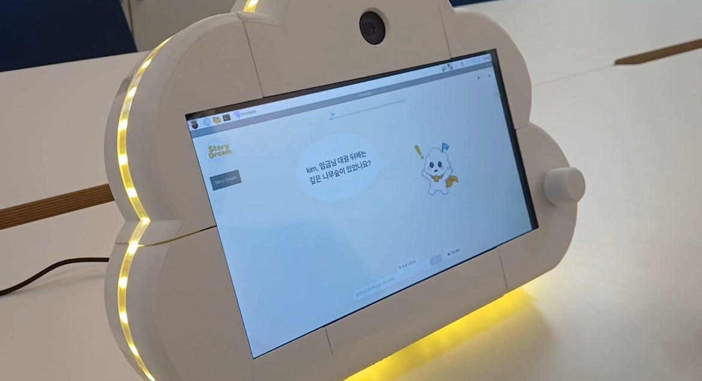
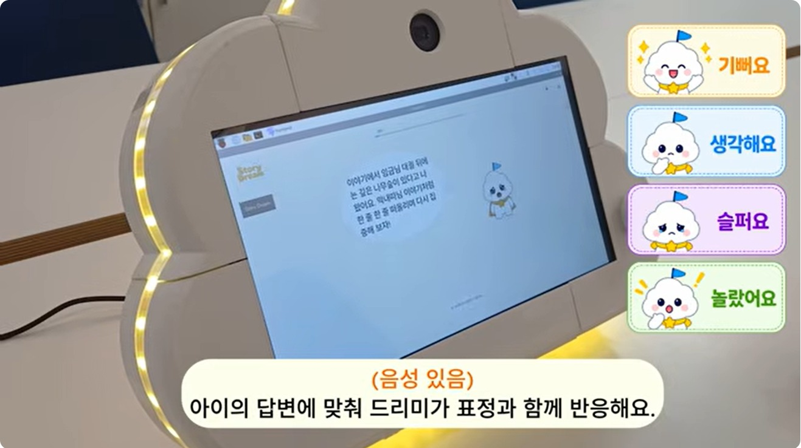
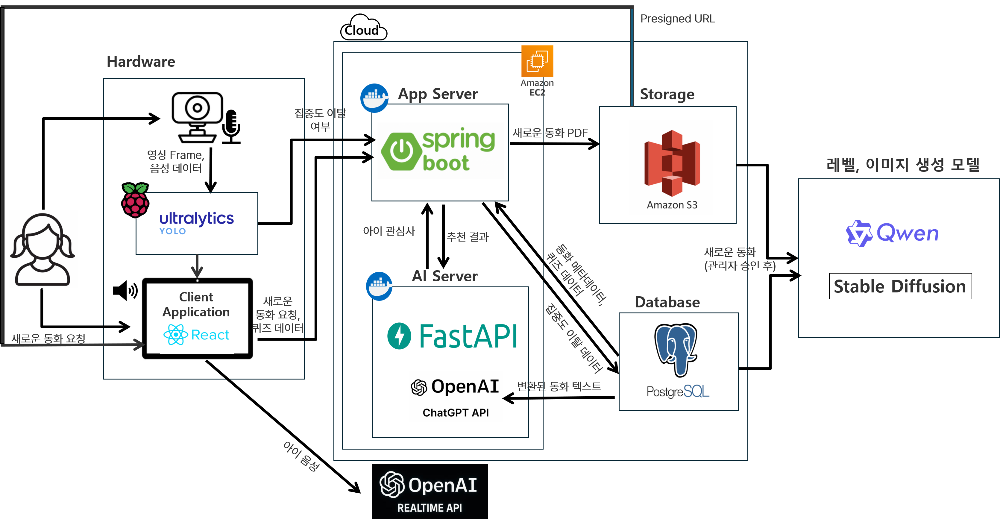
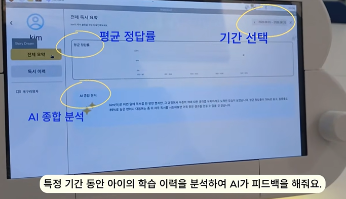
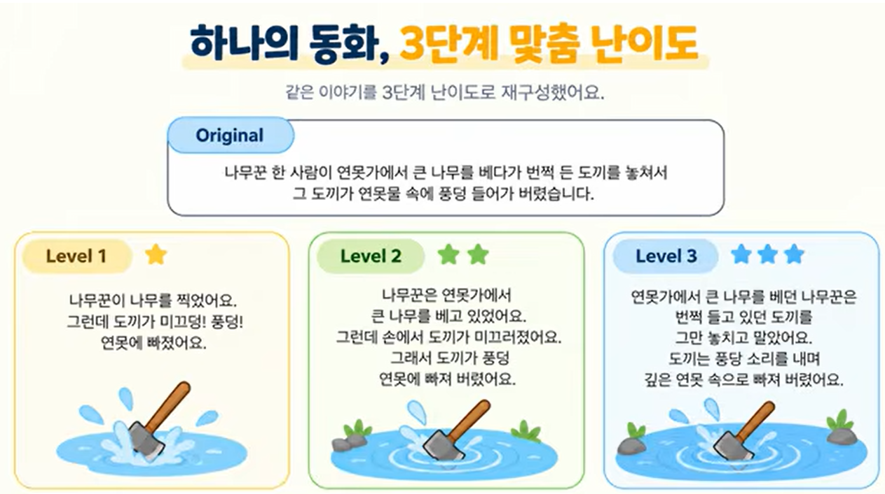
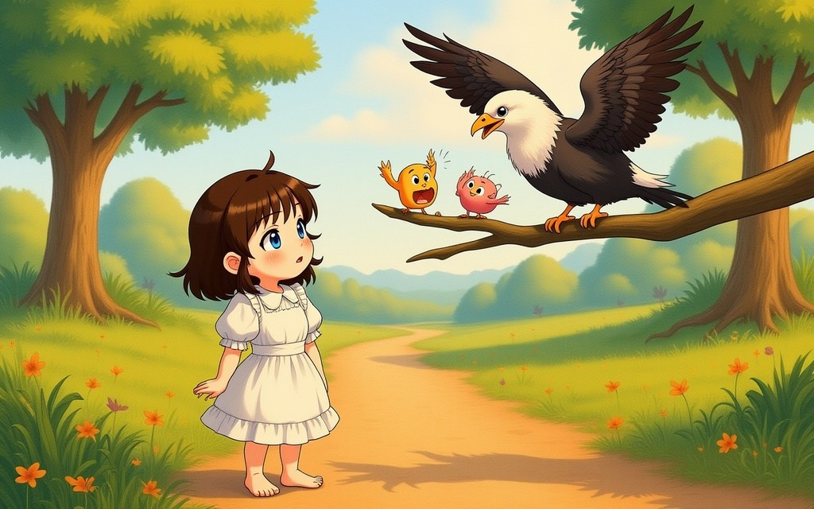
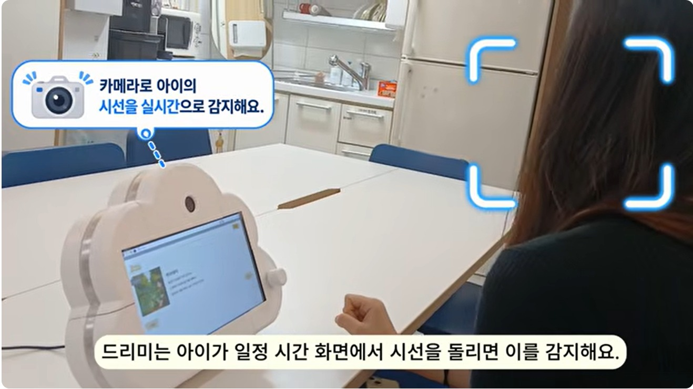

Backend · Data
- AI 독서 리포트 (비동기 생성 · 통계 조회)
- JWT 회원가입 / 로그인 · 전역 예외처리
- 동화 데이터셋 수집 · 전처리

Overview
아이 눈높이에 맞춰 동화를 읽어주고, 집중이 흐트러지면 말을 거는 AI 동화 기기
어휘 수준에 맞지 않는 동화와 단방향 전자책 때문에 아이들의 독서 흥미가 떨어진다는 문제에서 출발했습니다. 동화를 단계별 난이도로 재구성하고, 집중 상태에 반응하는 양방향 상호작용을 만들었습니다.

시연 영상 보기 (YouTube)Role & System
라즈베리파이 기기가 Spring 서버와 AI 서버를 호출하는 구조입니다. Spring 서버의 인증 및 리포트 도메인과 기기 쪽 AI 및 HW 연동을 맡았습니다.

Backend — 설계 판단
독서가 끝나면 집중도 · 퀴즈 기록을 모아 LLM이 보호자용 리포트를 씁니다. 느리고 실패할 수 있는 AI 호출이 독서 기능을 막지 않도록 Spring에서 구조를 나눴습니다.
독서 완료는 즉시 응답하고, 리포트는 트랜잭션 커밋 후 별도 스레드에서 생성
AI가 느리거나 실패해도 독서 기록은 안전

Difficulty
아이의 어휘 수준에 맞춰 같은 동화를 3단계 난이도로 재구성합니다.
팀 기준만으로는 단계별 차이가 불분명
교육 현장 기준을 세우고 교사 비교 평가로 확정
로컬 LLM은 매번 예시 필요, 결과 편차 큼
GPT 데이터로 LoRA 튜닝

Illustration
장면이 바뀌어도 배경과 인물이 이어지도록 이전 맥락과 캐릭터 레퍼런스를 함께 넣어 생성합니다.
지금까지의 이야기, 현재 장소, 등장인물, 직전 구도를 짧게 요약해 다음 장면 프롬프트 앞에 넣음
장면이 바뀌어도 배경과 상황이 이어짐
동화 전체에서 주요 인물을 뽑아 캐릭터 이미지를 만들고 장면 생성 때 참조로 사용

Focus Detection
얼굴 방향(Front · Side · Back · Absent)으로 집중 여부를 판단합니다.
Side 오탐 (Precision 75.8%) · Back 놓침 (Recall 87.0%)
평가셋 — Front/Side/Back/Absent를 직접 촬영
CrowdHuman — 얼굴 crop 후 DirectMHP로 방향 라벨링
PanoHead — 정면 1장으로 360° 회전 이미지 생성
판정 클래스 FrontSideBackAbsent
| Front | Side | Back | |
|---|---|---|---|
| YOLO-Pose (기존) | 89.7 | 84.7 | 92.0 |
| CrowdHuman + PanoHead | 89.7 | 92.6 | 97.8 |

Realtime
집중이 흐트러지면 방금 읽은 내용으로 질문하고, 답을 판정한 뒤 이야기를 이어갑니다.
Result